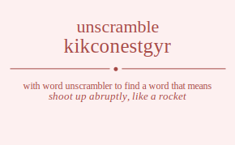

The word found after unscrambling kikconestgyr means that shoot up abruptly, like a rocket, .
kikconestgyr has jumble solution. Please see which words made after unscrambling kikconestgyr.
Daily Jumble Solution: skyrocketing
You can use following links to see other word jumble solutions for the same day
kikconestgyr neloc osikk tosdem yrgeta

Unscrambled 12 letter words from kikconestgyr
skyrocketing
Unscrambled 11 letter words from kikconestgyr
keystroking
Unscrambled 10 letter words from kikconestgyr
restocking
Unscrambled 9 letter words from kikconestgyr
oystering
restoking
skyrocket
cytokines
corseting
escorting
sectoring
socketing
rocketing
Unscrambled 8 letter words from kikconestgyr
storying
stroying
stroking
serotiny
tyrosine
instroke
seignory
genitors
trekking
stocking
trocking
knockers
cytosine
cointers
corniest
noticers
corkiest
rockiest
stockier
snickery
stricken
cytokine
knickers
cryogens
synergic
cresting
escoting
gerontic
coreigns
cosigner
Unscrambled 7 letter words from kikconestgyr
stringy
signory
sorting
storing
trigons
stoking
troking
stenoky
yonkers
reknots
norites
oestrin
orients
stonier
reknits
stinker
tinkers
skinker
eryngos
groynes
tongers
goiters
goitres
goriest
retying
syringe
resting
stinger
isogeny
genitor
eringos
ignores
regions
signore
yerking
tyronic
cistron
citrons
cortins
tricksy
scrying
cosying
costing
gnostic
scoring
yocking
socking
corking
rocking
cornets
restock
rockets
stocker
conkers
reckons
knocker
society
erotics
cystein
cystine
cistern
cretins
notices
section
cointer
noticer
coiners
cronies
orceins
recoins
rickety
rickeys
rickets
sticker
tickers
nickers
snicker
kenotic
ketonic
kickers
cygnets
congest
cryogen
congers
ergotic
cringes
cognise
coignes
coreign
recking
kecking
Unscrambled 6 letter words from kikconestgyr
rosiny
intros
nitros
stinky
stinko
gyrons
strong
griots
trigos
stingy
stying
trying
tyring
string
toying
yogins
ingots
stingo
tigons
trigon
girons
grison
groins
rosing
signor
soring
skying
tsking
ryking
yoking
toking
oyster
storey
toyers
sentry
stoney
nestor
noters
stoner
tenors
tensor
toners
trones
stoker
stroke
tokers
trokes
tokens
yonker
reknot
sortie
tories
triose
nitery
resiny
estrin
inerts
insert
inters
niters
nitres
sinter
triens
trines
norite
orient
tonier
irones
nosier
senior
kyries
kiters
strike
trikes
reknit
tinker
inkers
reinks
sinker
eikons
enokis
koines
stogey
gyrose
ergots
gentry
eryngo
groyne
tonger
genros
goners
tigers
egoist
stogie
goiter
goitre
orgies
ingest
signet
tinges
engirt
reigns
renigs
resign
sering
signer
singer
toeing
soigne
eringo
ignore
region
keying
cytons
stocky
trocks
knocks
torics
tocsin
tonics
citron
cortin
orcins
sticky
tricky
strick
tricks
yoicks
corgis
crying
coying
coting
coigns
cosign
incogs
coring
coking
coyest
corset
coster
escort
rectos
scoter
sector
encyst
coneys
centos
contes
cornet
censor
crones
recons
socket
rocket
ockers
conker
reckon
citers
recits
steric
trices
cestoi
erotic
cosier
nicety
incest
insect
nicest
cretin
noetic
notice
conies
cosine
icones
oscine
coiner
orcein
recoin
crikey
rickey
ticker
ickers
sicker
sicken
nicker
kicker
cygnet
cogent
conges
conger
geckos
gestic
cering
cringe
coigne
Unscrambled 5 letter words from kikconestgyr
ryots
story
stroy
troys
tyros
stony
snort
skort
stork
torsk
knots
konks
riots
rotis
tiros
torsi
trios
trois
noisy
yonis
irony
intro
nitro
irons
noirs
noris
ornis
rosin
risky
skirt
stirk
knits
skint
stink
kirns
rinks
ikons
kinos
oinks
kirks
kiosk
kinky
kinks
skink
stogy
gorsy
gyros
grots
trogs
tongs
gyron
groks
girts
grist
grits
trigs
yogis
griot
trigo
giros
tying
sting
tings
girns
grins
rings
yogin
ingot
tigon
giron
groin
ginks
kings
treys
tyers
tyres
toyer
oyers
yores
roset
rotes
store
tores
torse
tynes
entry
syren
nerts
rents
stern
terns
toney
nosey
notes
onset
seton
steno
stone
tones
onery
noter
tenor
toner
trone
senor
snore
kytes
tykes
rykes
yerks
treks
yokes
stoke
tokes
toker
troke
ensky
kerns
token
kenos
krone
yetis
resit
rites
tiers
tires
tries
osier
inset
neist
nites
senti
stein
tines
inert
inter
niter
nitre
trine
reins
resin
rinse
risen
serin
siren
eosin
noise
irone
skiey
yikes
kites
skite
tikes
kyrie
kiter
trike
keirs
kiers
siker
skier
kines
skein
inker
reink
eikon
enoki
koine
kikes
greys
gyres
ergot
goers
gores
gorse
ogres
gents
segno
genro
goner
gites
tiger
eying
tinge
segni
sengi
singe
reign
renig
eking
torcs
cyton
corny
crony
corns
scorn
yocks
stock
corky
rocky
trock
corks
rocks
conky
conks
nocks
knock
crits
stoic
toric
coirs
yonic
ontic
tonic
cions
coins
icons
scion
sonic
orcin
stick
ticks
trick
ricks
sicko
nicks
snick
kicky
kicks
yogic
corgi
orgic
coign
incog
crest
cosey
coset
cotes
escot
coyer
recto
ceros
cores
corse
score
cents
scent
coney
cento
conte
oncet
cones
scone
crone
recon
recks
cokes
ocker
necks
sneck
kecks
cesti
cites
citer
recit
recti
trice
cires
cries
rices
cosie
yince
cines
since
nicer
icker
conge
gecks
gecko
genic
Unscrambled 4 letter words from kikconestgyr
toys
ryot
tory
troy
tyro
rosy
orts
rots
sort
tors
tony
nosy
snot
tons
torn
sorn
yoks
kors
knot
konk
stir
riot
roti
tiro
tori
trio
sori
tiny
tyin
yins
nits
snit
tins
rins
yoni
into
ions
inro
iron
noir
nori
kist
kits
skit
irks
kirs
kris
risk
kois
inky
knit
inks
kins
sink
skin
kirn
rink
ikon
kino
oink
kirk
kink
goys
togs
gory
gyro
orgy
grot
trog
tong
nogs
snog
song
grok
gist
gits
gyri
girt
grit
trig
rigs
yogi
giro
ting
gins
sign
sing
girn
grin
ring
gink
king
stey
stye
tyes
trey
tyer
tyre
ryes
erst
rest
rets
tres
oyes
toes
oyer
yore
rote
tore
eros
ores
roes
rose
sore
tyne
snye
syne
yens
nest
nets
sent
tens
rent
tern
erns
note
tone
eons
noes
nose
ones
sone
kyte
tyke
keys
kyes
syke
ryke
yerk
trek
yoke
keto
toke
okes
soke
kore
kent
kens
kern
keno
yeti
site
ties
rite
tier
tire
ires
reis
rise
sire
nite
tine
sine
rein
kite
tike
sike
keir
kier
kine
kike
gest
gets
tegs
grey
gyre
ergs
regs
egos
goes
sego
ergo
goer
gore
ogre
gent
engs
gens
negs
gone
kegs
skeg
gite
egis
gies
gien
cyst
scry
cosy
coys
cost
cots
scot
cory
torc
cors
orcs
rocs
sync
cony
cons
corn
coky
yock
sock
cork
rock
conk
nock
city
cist
tics
crit
cris
otic
coir
cion
coin
coni
icon
icky
tick
sick
rick
nick
kick
cogs
cigs
syce
sect
recs
cote
cero
core
cent
cone
once
reck
coke
neck
keck
cite
etic
ices
sice
cire
rice
cine
nice
geck
Unscrambled 3 letter words from kikconestgyr
sty
try
toy
soy
sot
ort
rot
tor
ors
syn
yon
not
ton
nos
ons
son
nor
sky
tsk
yok
kos
kor
its
sit
tis
sir
sri
yin
nit
tin
ins
sin
rin
ion
kit
kis
ski
irk
kir
koi
ink
kin
goy
got
tog
gos
gor
nog
git
rig
gin
tye
yet
yes
set
rye
ret
ers
res
ser
toe
oes
ose
ore
roe
yen
net
ten
ens
sen
ern
eon
one
key
kye
oke
ken
tie
sei
ire
rei
gey
get
teg
seg
erg
reg
ego
eng
gen
neg
keg
gie
cry
coy
cot
cos
cor
orc
roc
con
icy
tic
cis
sic
ick
cog
cig
sec
rec
ice
Unscrambled 2 letter words from kikconestgyr
oy
yo
to
os
so
or
no
on
it
ti
is
si
oi
in
ki
go
ye
et
es
er
re
oe
en
ne